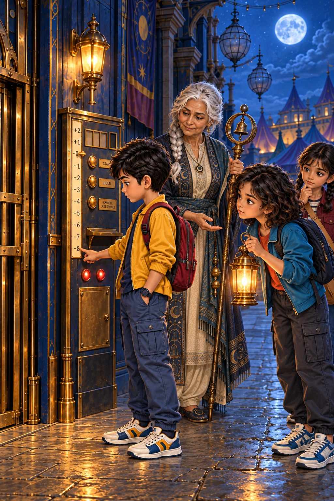

CHAPTER 01 - NUMBERS - PG 0044

A small lift car stands behind a brass safety gate at street level. Next to it is a control box with a row of slots. Numbered cards fit into those slots. Each card tells the lift how far to move and in which direction.
The children can now see their first job. They must send the empty car down to the helper, let it load the supplies and bring it back.

Beside the shaft, a numbered strip shows the lift’s position. Street level is marked 0. Positive numbers are above it. Negative numbers are below. The store is at −8.
Eight marks below the street.
Vihaan follows the strip with his finger.

Yes.
The numbers tell us where the lift is compared with this landing.

How can we choose movements that will reach the store?